melanoma_ST_vignette.RmdThe package spatialGE provides a set of tools for the visualization of gene expression from spatially-resolved arrays, such as those generated by the 10X Visium platform.
Before installing spatialGE, please make sure that xCell is already installed.
The spatialGE repository is available at GitHub and can be installed via devtools. To install devtools in case is not installed in your R console, please run the following code:
if("devtools" %in% rownames(installed.packages()) == FALSE) {
install.packages("devtools")
}After making sure devtools is installed, proceed to install spatialGE:
#devtools::install_github("fridleylab/spatialGEdev")To use spatialGE, load the package using the command:
library(spatialGEdev)To show the utility of spatialGE, we use the Spatial Transcriptomics data set generated by Thrane et al. (2018) that included lymph node biopsies from four stage IIIc melanoma patients, with two arrays per biopsy (DOI: 10.1158/0008-5472.CAN-18-0747). The spatial slides used in this melanoma comprised 1,007 ‘spots’ with 200μM of distance between their centers. The spots had a diameter of 100μM, covering 5-40 cells according to the authors.
In the data provided as example for spatialGE, we have removed probe names and duplicate gene names (resulting from different probes). The user can find the original raw data at the authors website (https://www.spatialresearch.org/resources-published-datasets/doi-10-1158-0008-5472-can-18-0747/).
Raw and processed data are stored in an STList (an R S4 class object). The STList can be created with the function STList(), which takes minimally two files: 1. A text file containing file paths of gene raw count matrices, one per line. The gene count matrices must be tab-separated, with gene names in the first column, and spots in subsequent columns. Matrices of different for each tissue slice are allowed, but duplicated gene names are not. 2. A text file containing file paths of x,y coordinates for each spot, one per line. The order of the coordinate file paths must match that of the raw count matrices.
Optionally, the user can provide a table with clinical/phenotype data associated with each spatial array. This table is a comma-separated file with sample ID in the first column, and relevant variables in subsequent columns. The order of the rows in the clinical file must match that of the file paths.
The example files in this tutorial can be downloaded from the GitHub repository (https://github.com/FridleyLab/spatialGEdev/tree/main/inst/extdata). They are also stored in your local spatialGE installation:
data_files <- system.file("extdata", package="spatialGEdev")We then create two files (fpaths_count_files.txt and fpaths_mapping_files.txt), containing the file paths where the count and coordinate files are stored. Those two files will be the input to later create the Spatial Transcriptomics List (STList).
count_files <- grep("genes", list.files(data_files, full.names=T), value=T)
write(count_files, file="fpaths_count_files.txt")
coord_files <- grep("mapping", list.files(data_files, full.names=T), value=T)
write(coord_files, file="fpaths_mapping_files.txt")We also locate the file containing the clinical variables. This is a single file containing a comma-separated table, with one row per each of the count files. An additional first row contains the names of the variables. The first column is the sample ID of each spatial array.
clin_file <- system.file("extdata", "thrane_clinical.csv", package = "spatialGEdev")We can load the files into an STList object like so:
melanoma <- STList(countfiles = "fpaths_count_files.txt",
coordfiles = "fpaths_mapping_files.txt",
clinical = clin_file
)
#> Creating STList...The melanoma object is an STList, and contains the count data, spot coordinates, and clinical data.
melanoma
#> Spatial Transcriptomics List (STList)
#> 4 spatial arrays.
#> 6 variables in clinical data.The function STbulk_pca() allows for a quick snapshot of the variation in gene expression among samples. The function creates ‘bulk’ RNA-Seq data sets by combining all counts from a spatial array. Then, it applies limma-voom normalization to these ‘bulk’ RNA-Seq libraries and performs a PCA. Note that spatial (x,y) coordinate information is not included in this analysis, which is intended as a tool for data exploration. In this case, we apply the function to look for agreement between samples from the same patient: it is expected that tissue slices from the same patient are more similar between them, than slices from other patients. The STbulk_pca() allows to map a clinical variable to the PCA (gender in this example), by including the exact name of the column from the clinical/phenotype file.
bulk_pca(melanoma, clinvar='Gender')
#> Loading required package: magrittr
#> Loading required package: ggplot2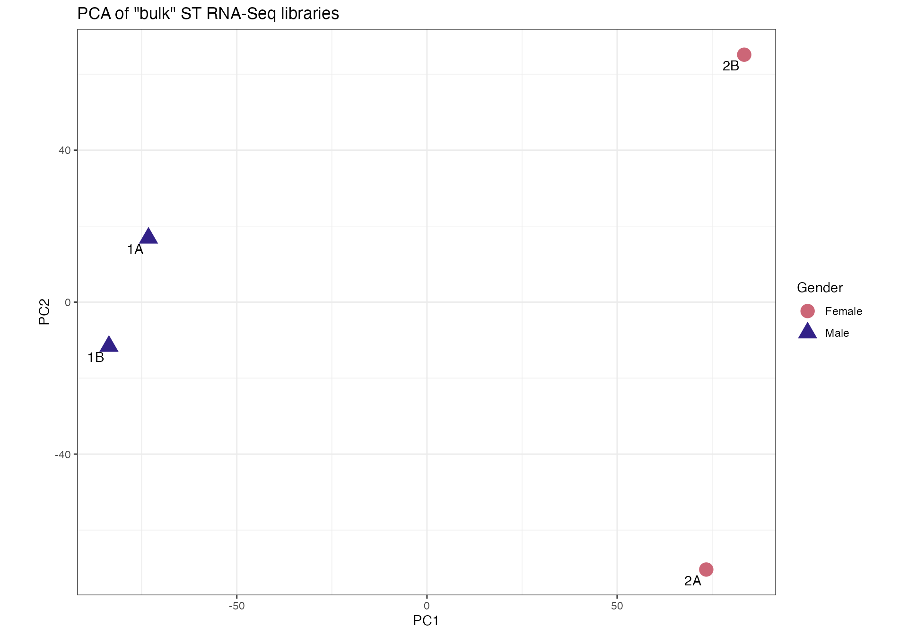
Many normalization methods are available for both bulk and single-cell RNA-Seq data. In spatialGE, we apply limma-voom normalization to RNA-Seq libraries from each of the spots in order to obtain a gaussian-shape normal distribution required by most methods in this package. Many of the methods implemented in spatialGE have been borrowed from the field of geostatistics, which often require this kind of data normalization.
Normalization is achieved by applying the function voom_norm() to the melanoma object.
melanoma <- voom_norm(melanoma)
#> Normalizing spatial array #1...
#> Normalizing spatial array #2...
#> Normalizing spatial array #3...
#> Normalizing spatial array #4...After normalization, expression of specific genes can be visualized using ‘quilt’ plots. The function plot_gene_quilt() re-creates the shape of the spatial array and shows the scaled normalized expression of a gene. We have adopted the color palettes from the package khroma. The color palette can be passed using the argument color_pal. The default behavior of the function produces plots for all spatial arrays in the STList, but we can define who should be plotted using the argument plot_who.
Let’s produce a quilt plot for the genes IGLL5 and SOX10, an immunoglobulin gene and a melanoma marker.
quilts1 <- plot_gene_quilt(melanoma, genes=c('IGLL5', 'SOX10'), color_pal="YlOrBr",
plot_who=2, visium=F)
ggpubr::ggarrange(plotlist=quilts1, nrow=1, ncol=2, common.legend=T, legend='bottom')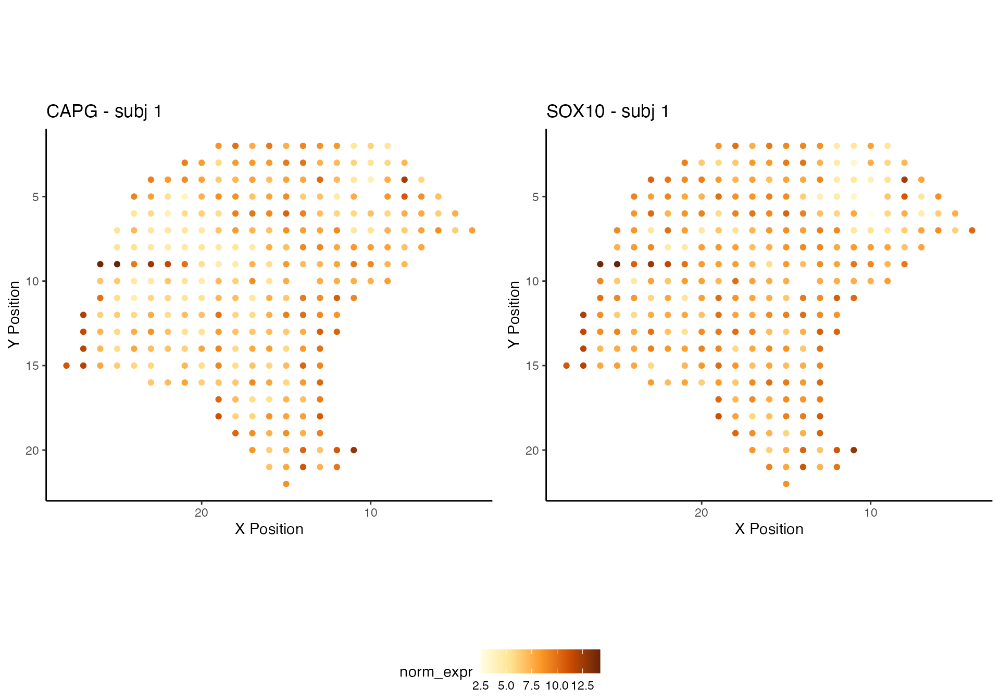
We can see that gene expression patterns of both genes are different, with a more dispersed pattern in SOX10, compared to IGLL5 The large area of lower IGLL5 expression corresponds to the melanoma pocket detected by Thrane et al. (see Figure 3 of their study).
We can predict a smooth surface of the gene expression in a spatial array. In spatialGE, this prediction is achieved by a type of spatial interpolation widely used on geographic data. The method named ‘kriging’ allows for the estimation of the normalized gene expression value of the unsampled areas between spots, or spots for which a RNA-Seq library failed to provide data. Estimating a transcriptomic surface via kriging assumes that gene expression of two given points is correlated with the physical distance between them.
The function gene_krige() performs kriging of gene expression via the geoR package:
melanoma <- gene_krige(melanoma, genes=c('IGLL5', 'SOX10'), who=c(2, 3))
#> Performing spatial interpolation ('kriging') of gene IGLL5 for subject 2...
#> Performing spatial interpolation ('kriging') of gene SOX10 for subject 2...
#> Performing spatial interpolation ('kriging') of gene IGLL5 for subject 3...
#> Performing spatial interpolation ('kriging') of gene SOX10 for subject 3...The surface can be visualized using the plot_gene_krige() function:
kriges1 <- plot_gene_krige(melanoma, genes=c('IGLL5', 'SOX10'), plot_who=2, visium=F)
#> Loading required namespace: rgeos
ggpubr::ggarrange(plotlist=kriges1, nrow=1, ncol=2, common.legend=T, legend='bottom')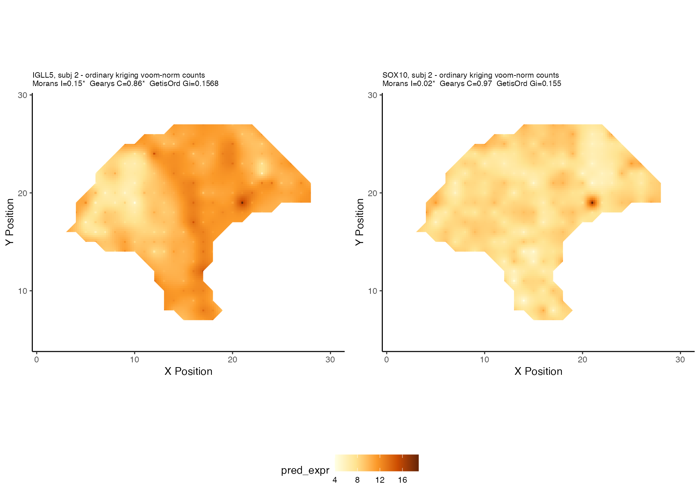
By looking at the transcriptomic surfaces of the tho genes, it is easier to detect pockets of higher (or lower) expression within the tissue. It is now more evident that expression of IGLL5 is lower on the left (melanoma) portion of the tumor slice, compared to the rest of the slice.
In the transcriptomic surface plots, spatialGE outputs three spatial heterogeneity statistics: Moran’s I, Geary’s C, and Getis-Ord Gi.
| Low | Statistic | High |
|---|---|---|
| Dispersion | Moran’s I | Clustering |
| Clustering | Geary’s C | Dispersion |
| “Cold spots” | Getis-Ord Gi | “Hot spots” |
A higher Moran’s I for IGLL5 indicates that there are clusters of high expression. In other words, gene expression of IGLL5 is not uniform across the tissue. Geary’s C was significantly different than zero in IGLL5, but not SOX10 (indicated by asterisk), further validating the higher gene expression clustering in IGLL5. Statistical significance (p<0.05) in spatialGE is obtained via permutation (performed with spdep).
We can control which tissue slice to plot with the plot_who argument. This argument is also included in the quilt plot functions.
kriges2 <- plot_gene_krige(melanoma, genes=c('IGLL5', 'SOX10'), plot_who=3, visium=F)
ggpubr::ggarrange(plotlist=kriges2, nrow=1, ncol=2, common.legend=T, legend='bottom')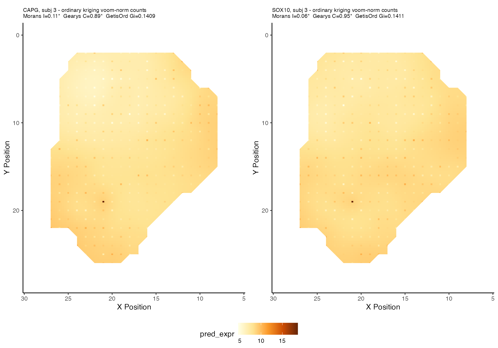
Many gene expression deconvolution methods are available, and their use will depend largely on the question and biological system to be studied. In spatialGE, we have implemented xCell to provide a qualitatuve snapshot of the cell composition within a spatial array. Decovolution in xCell focuses on immunological cell types, which is of crucial importance in the study of tumor microenvironment.
Let’s apply xCell to the spatial arrays:
melanoma <- spatial_deconv(melanoma, method='xcell')
#> This will take some time...
#> Loading required package: estimate
#> Estimating 'purity' scores for spatial array #1...
#> [1] "Merged dataset includes 8576 genes (1836 mismatched)."
#> [1] "1 gene set: StromalSignature overlap= 134"
#> [1] "2 gene set: ImmuneSignature overlap= 139"
#> Estimating 'purity' scores for spatial array #2...
#> [1] "Merged dataset includes 8713 genes (1699 mismatched)."
#> [1] "1 gene set: StromalSignature overlap= 132"
#> [1] "2 gene set: ImmuneSignature overlap= 139"
#> Estimating 'purity' scores for spatial array #3...
#> [1] "Merged dataset includes 8775 genes (1637 mismatched)."
#> [1] "1 gene set: StromalSignature overlap= 133"
#> [1] "2 gene set: ImmuneSignature overlap= 138"
#> Estimating 'purity' scores for spatial array #4...
#> [1] "Merged dataset includes 8708 genes (1704 mismatched)."
#> [1] "1 gene set: StromalSignature overlap= 133"
#> [1] "2 gene set: ImmuneSignature overlap= 137"
#> Loading required package: xCell
#>
#> Applying xCell to spatial array #1...
#> Warning in .gsva(expr, mapped.gset.idx.list, method, kcdf, rnaseq,
#> abs.ranking, : Some gene sets have size one. Consider setting 'min.sz > 1'.
#>
#> Calculating p-values for spatial array #1...
#>
#> Applying xCell to spatial array #2...
#>
#> Calculating p-values for spatial array #2...
#>
#> Applying xCell to spatial array #3...
#> Warning in .gsva(expr, mapped.gset.idx.list, method, kcdf, rnaseq,
#> abs.ranking, : Some gene sets have size one. Consider setting 'min.sz > 1'.
#>
#> Calculating p-values for spatial array #3...
#>
#> Applying xCell to spatial array #4...
#>
#> Calculating p-values for spatial array #4...With the function plot_deconv_quilt(), we can visualize the cell type scores inferred by xCell. For example, B cells and dendritic cells.
quilts2 <- plot_deconv_quilt(melanoma, cells=c('b_cells', 'i_dc'),
color_pal="YlOrBr", plot_who=2, purity=T, visium=F)
ggpubr::ggarrange(plotlist=quilts2, nrow=1, ncol=3, common.legend=T, legend='bottom')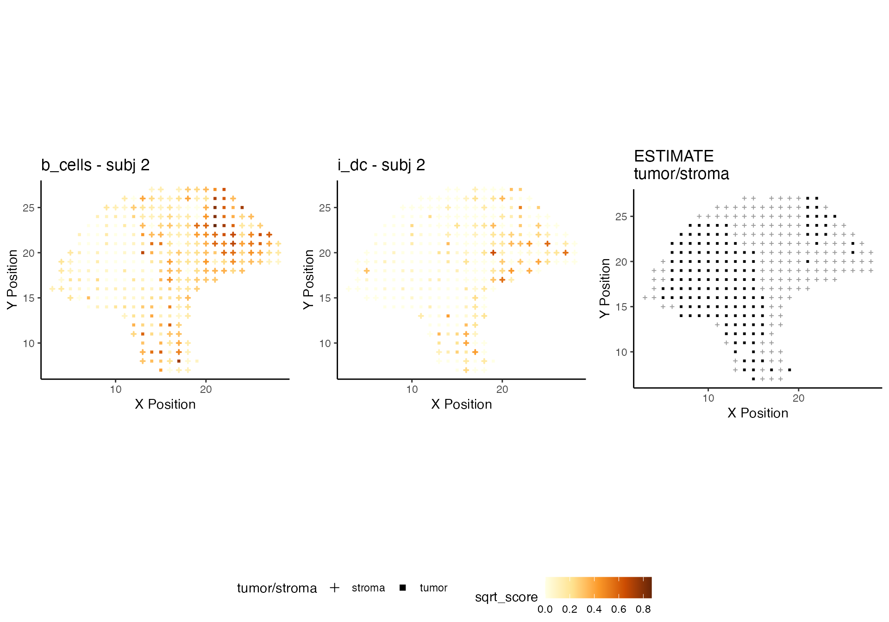
By plotting the tumor/stroma classification of the spots, the differences in cell scores can quiclky be detected. Melanoma areas (squares) show lower B cell and dendritic cell scores, as expected. Nonetheless, B cells were abundant in the lymphoid pocket (upper right part of the tissue).
Similar plots can be generated for gene expression, as opposed to deconvolution scores, with the plot_gene_quilt() function:
quilts3 <- plot_gene_quilt(melanoma, genes=c('IGLL5', 'SOX10'), color_pal="YlOrBr",
plot_who=2, purity=T, visium=F)
ggpubr::ggarrange(plotlist=quilts3, nrow=1, ncol=3, common.legend=T, legend='bottom')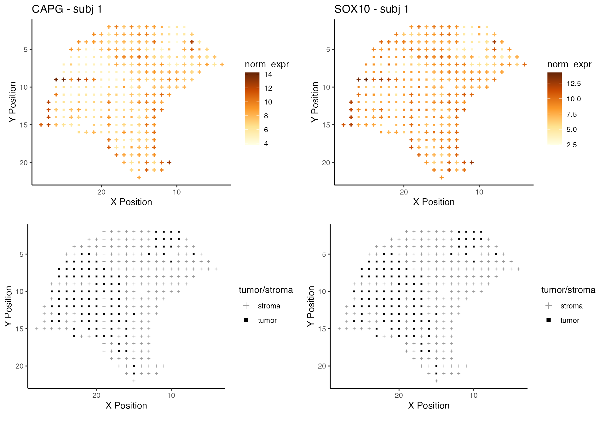
Spatial interpolation of cell scores is also possible with the deconv_krige() function:
melanoma <- deconv_krige(melanoma, cells=c('b_cells', 'i_dc'), who=2)
#> Performing spatial interpolation ('kriging') of b_cells for subject 2...
#> Performing spatial interpolation ('kriging') of i_dc for subject 2...We plot the surfaces using the plot_deconv_krige() function.
kriges3 <- plot_deconv_krige(melanoma, cells=c('b_cells', 'i_dc'),
color_pal="YlOrBr", plot_who=2, visium=F)
ggpubr::ggarrange(plotlist=kriges3, nrow=1, ncol=2, common.legend=T, legend='bottom')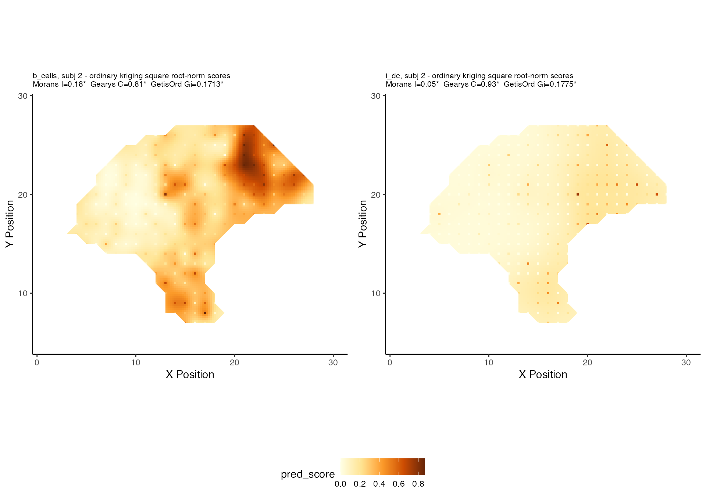
Cell scores in xCell are accompanied by p-values to support the significance of the scores. The p-values are calculated automatically during deconvolution in spatialGE, and we can plot them using the pvalue option:
kriges4 <- plot_deconv_krige(melanoma, cells=c('b_cells', 'i_dc'),
color_pal="YlOrBr", plot_who=2, pvalues=T, visium=F)
ggpubr::ggarrange(plotlist=kriges4, nrow=1, ncol=2, common.legend=T, legend='bottom')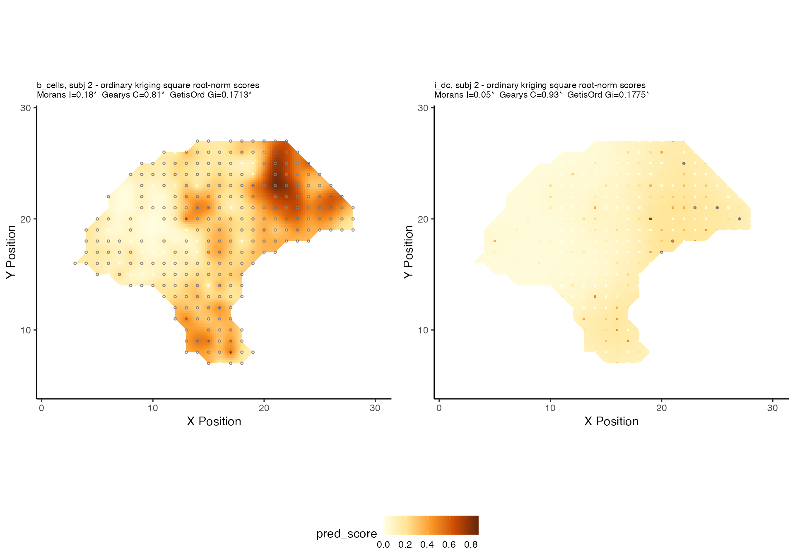
B cells are present throughout the tissue, but less abundant in the melanoma pocket. The estimates were significantly different from zero as sugggested by xCell’s permutation method. The xCell scores for the dendritic cells were only significantly different from zero only for a few spots (gray hollow circles).
The plot_deconv_krige() also allows annotation of tumor spots:
kriges5 <- plot_deconv_krige(melanoma, cells=c('b_cells', 'i_dc'),
color_pal="YlOrBr", plot_who=2, purity=T, visium=F)
ggpubr::ggarrange(plotlist=kriges5, nrow=1, ncol=2, common.legend=T, legend='bottom')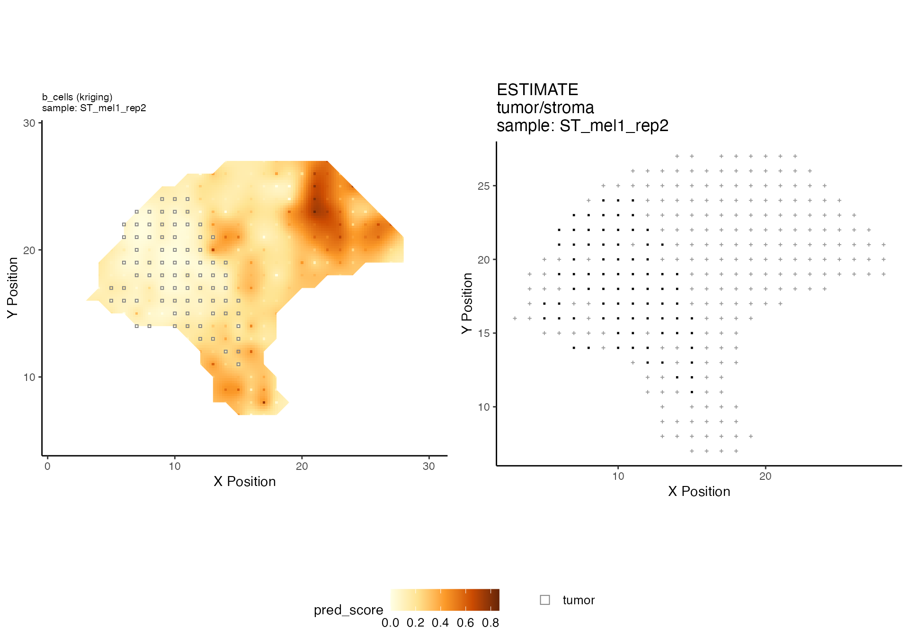
We can now perform hierarchical clustering to detect differences in gene expression across the tissue. In spatialGE, we use weighted average matrices to capture the the transcriptomic differences between the spots. The transcriptomic (euclidean) distance matrix is calculated and scaled. Following, scaled euclidean distances are computed for the spatial distances between spots. The user defines a weight, from 0 to 1, to apply to the spatial distances. The higher the weight, the less biologically meaningful the clustering is given that the groups will only reflect the physical distances between the spots and less information on the transcriptomic profiles will be used. After many tests, we have found that weights between 0.1 - 0.25 should be enough to capture the tissue heterogeneity. This approach to dspatial clustering can be performed using the cluster_STspot() function:
melanoma <- cluster_STspot(melanoma, ks='dtc', weights=0.05)Results of clustering can be plotted via the plot_STclusters() function:
cluster_p <- plot_STclusters(melanoma, purity=T, plot_who=c(2,3), visium=F)
# In case specific k values are selected:
# for(i in 1:2){
# print(ggpubr::ggarrange(plotlist=cluster_p[[i]], nrow=2, ncol=2, common.legend=T, legend='bottom'))
# }
ggpubr::ggarrange(plotlist=cluster_p, nrow=1, ncol=2, common.legend=T, legend='bottom')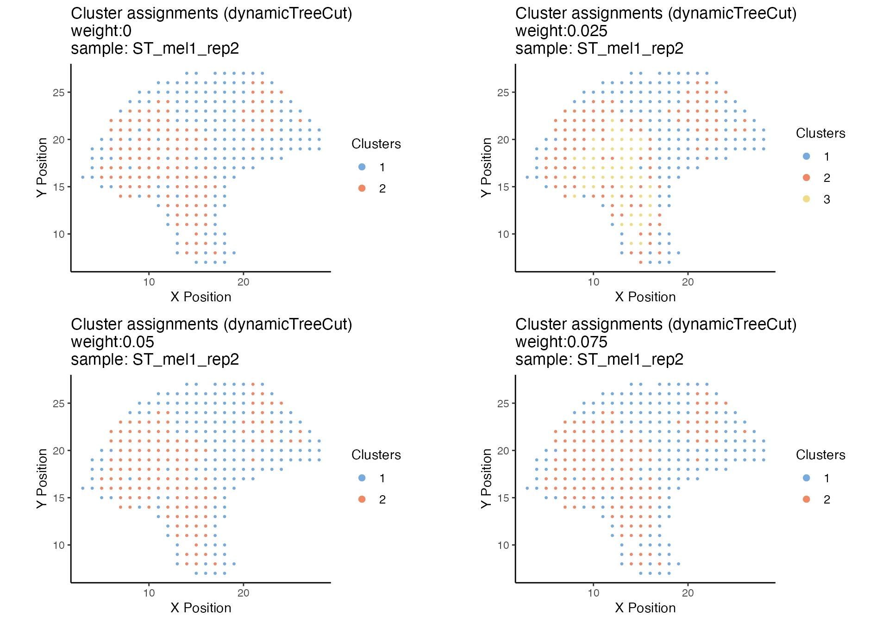
We have used here the dynamicTreeCut (dtc option) to select the number of clusters, but users can define their own range of k to evaluate. The two tissues plotted here, show compartmentalization, but in the sample on the left, the lymphoid tissue on the right portion of the tissue is shown in yellow.
To explore the relationship between a clinical variable of interest and the level of gene expression uniformity within a tissue section, we can use the function plot_phenovar():
pheno_p <- plot_phenovar(melanoma, phenovar='Survival', gene='SPP1')
ggpubr::ggarrange(plotlist=pheno_p, nrow=1, ncol=3, common.legend=T, legend='bottom')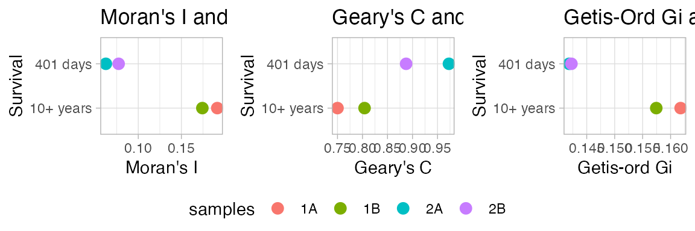
In the case of the phosphoprotein SPP1 gene, samples with a more uniform expression came from subjects with a higher survival time (low Moran’s I; high Geary’s C). A tendency for fewer “hotspots” of high expression was also observed in those samples (lower Getis-Ord Gi compared to other samples).